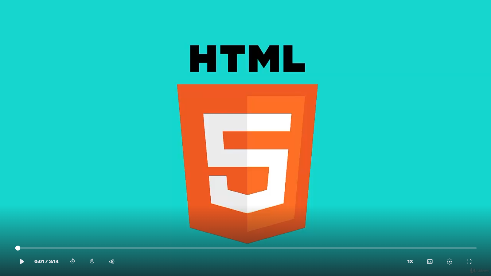
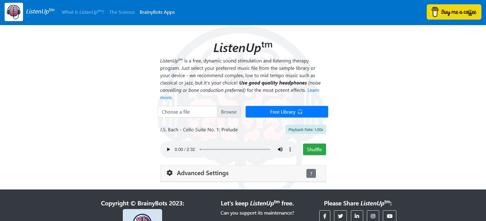

How I work
Most of my career has been spent where engineering and teaching overlap. These are the three things I’m usually hired to do.
Teach developers
Live workshops, bootcamps and 1-to-1 code reviews. I’m at my best coding in front of a room and explaining why, not just how.
Build learning tools
I built BrightCode, a practice platform that runs automated test suites against learner code, so instructors spend less time marking and learners get faster feedback.
Document and design
Curriculum architecture, tutorials, docs-as-code workflows and assessment rubrics, backed by a QQI Level 6 Train the Trainer certification.
Case studies
Most of my work was done for private organisations, so these are written as case studies instead of shown as artefacts. I’m happy to walk through any of them in detail.
BrightCode: automating practice and feedback for bootcamp learners
Context
Bright Network Tech Academy ran intensive full-stack programmes for hundreds of aspiring engineers. Manual marking and review was slow, and learners waited too long for feedback.
What I did
Concepted and built BrightCode, a practice platform that executes automated test suites against submitted code to provide fast, consistent feedback.
Outcome
Automated roughly 40% of assessment workflows and sped up learner onboarding.
BrightCode screenshots
A docs-as-code textbook for a software bootcamp
Context
Bright Network’s bootcamps taught JavaScript, TypeScript, React and Node.js to career-changers. They needed course materials that could be updated as quickly as the technology changed.
What I did
Wrote and structured the course textbook as a GitHub repository: Markdown and MDX chapters, with GitHub Actions validating and deploying every change. I built and tested the sample apps and walkthroughs so learners could reproduce each setup step by step, and wrote the exercise guides, debugging notes and rubric criteria that went with them.
Outcome
[Add: link to the repo or a sample chapter if shareable, number of chapters, what the CI checks do (build, link check, lint), how many cohorts used it.]
Leading development of an English-learning suite for young learners
Context
At Highwood Educational Consulting I led development of interactive English-language programmes for young learners, used in learning centres and at home. Each needed engaging activities, parent involvement and progress tracking.
What I did
Led the engineering teams across the suite, set technical standards, introduced pair programming and code review, and wrote the onboarding documentation for new developers.
[Add: team size, your hands-on contributions, the management and progress-tracking system, anything about architecture.]
The products
- Jellyphonics: 75 phonics lessons across three game levels, with instructional and parent-child videos.
- rTunes: 12 song videos with live child actors, each followed by games and parent activities.
- PreK lessons: 73 lessons across 12 themes with more than 30 interactivity types, for ages 4 to 6.
- Grade 1 reading: 27 passages and 9 units, each activity led by an animated avatar.
Feedback
Teachers reported that the song videos helped shy students gain the confidence to speak English in class.
Selected product screens
Designing accredited game-development curricula
Context
As Course Coordinator and Senior Lecturer at Cenit College, I owned multi-module programmes in C#, game architecture and 3D modelling.
What I did
Wrote syllabi, lab workbooks and assessment briefs, and aligned everything to QQI quality-assurance standards.
Outcome
[Add: cohort sizes, pass rates, graduate destinations or one student project you’re proud of.]
Live examples
[Add: a tutorial you wrote, a teaching repo, and a short recorded live-coding session. Link each here with one line on the audience and goal.]
Published work
Public, verifiable material I created.

Stencyl Essentials
A beginner-friendly guide to building games, breaking complex logic and software architecture into approachable chapters.

Learn HTML5, CSS and JavaScript Basics
A beginner-friendly introduction to building websites and apps with HTML, CSS and JavaScript. Also available: courses on Pluralsight and Digital Tutors.
BrainyBots
Accessible cognitive-training apps, designed, built, tested and supported end to end.

Listen Up
A free auditory trainer for sound stimulation and listening practice.
Experience
Condensed; the full CV is available on request.
- Aug 2024 – Jul 2025CTO, Little Red Edu. Delivered SpeakKids, an augmented-reality language-learning app using speech recognition and AI features.
- Nov 2023 – presentFounder, BrainyBots. Independent studio building accessible cognitive-training tools.
- May 2022 – Oct 2024Full-Stack Trainer & Platform Developer, Bright Network Tech Academy. Curriculum, live teaching, code reviews and the BrightCode platform.
- Aug 2016 – Dec 2023Head of Engineering, Highwood Educational Consulting. Led engineering teams on early-learning apps and analytics dashboards.
- Aug 2013 – Jun 2016Game Developer, CyberMyth Games. Cut bug incidence by 25% and lifted player retention by 30%.
- Aug 2010 – Nov 2013Course Coordinator & Senior Lecturer, Cenit College. Game development and software programmes.
Let’s talk
I’m open to developer education, technical training, customer education and documentation roles. If your process includes a technical exercise, I’d love to show you how I’d teach a concept instead.